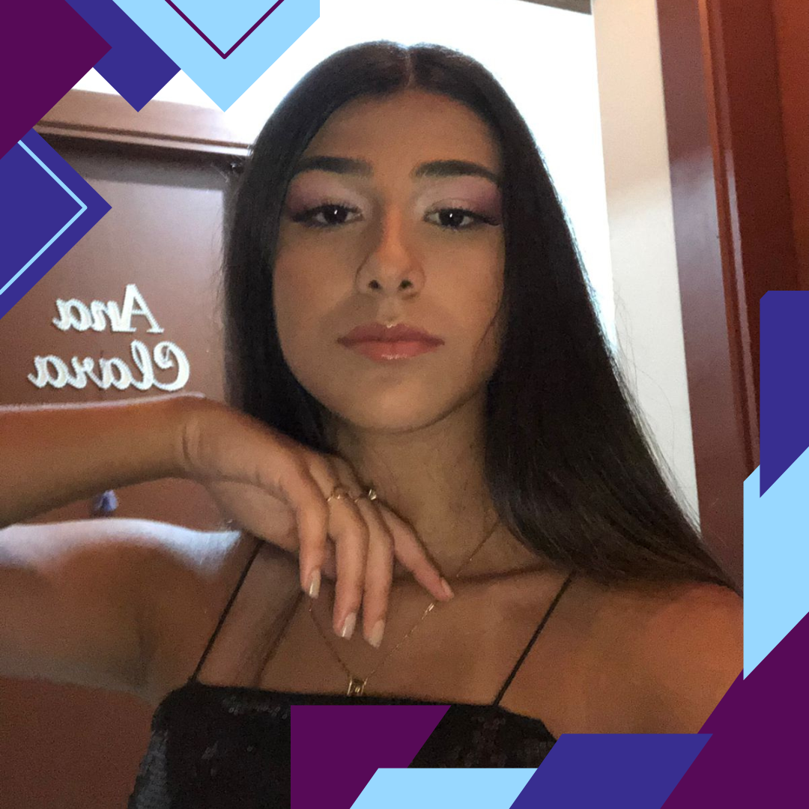

Currículo
Ana Clara Borges Fernandes. 16 anos, solteira.
Formação
- Escola de Ensino Médio Nossa Senhora de Fátima (Fevereiro de 2010 - Dezembro de 2021)
- Escola de Ensino Médio SESI Arthur Aluízio Daudt (Previsão de conclusão: 2024.)
- SENAI: Curso profissionalizante de Desenho Industrial (Previsão de conclusão: 2024.)
Idiomas
- Inglês nível avançado (Fevereiro/2014 – Dezembro/2021), Wizard Sapucaia
- 6 oficinas do SEBRAE (4h por oficina)
- Curso de programação Caldeira - em andamento
- Desafio de Robótica na Mostratec 2022 (Fevereiro/2014 – Dezembro/2021), Wizard Sapucaia 